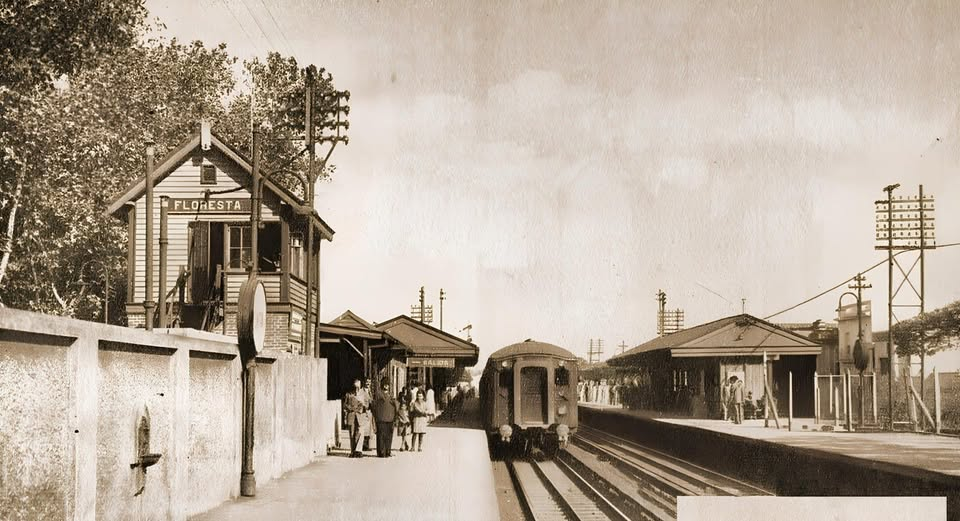

Historia, información y servicios de una de las estaciones más emblemáticas del Ferrocarril Sarmiento.
Conocer más
La estación Floresta pertenece al Ferrocarril Sarmiento y se encuentra ubicada en el barrio porteño de Floresta, en la Ciudad de Buenos Aires.
Inaugurada en el siglo XIX, forma parte de una de las líneas ferroviarias más importantes del país, conectando miles de pasajeros diariamente con distintos puntos del oeste bonaerense.
Actualmente, la estación continúa siendo un punto clave para la movilidad urbana y conserva gran parte de su valor histórico y cultural.
Situada sobre Yerbal y Bahía Blanca, en el barrio de Floresta.
Forma parte del histórico Ferrocarril Sarmiento.
Conexión con colectivos y distintos medios de transporte.